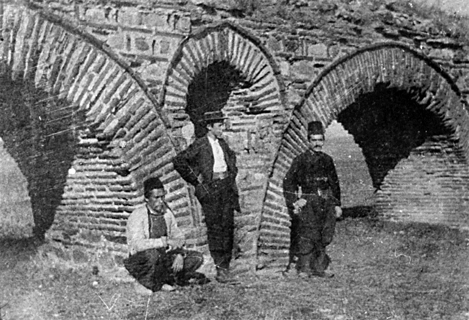

Аквадукт
- Производство
- УФУЖ и Документарен филм Прага
- Сценарио и режија
- Славко Јаневски и EMAN CANERA
- Година
- 1959
- Должина
- 00:16

На периферијата од Скопје, покрај патот Скопје - Качаник (од десна страна), се наоѓа стариот аквадукт, изграден од камен и тула. Монументален споменик од 6 век н.е. Го снабдувал градот со чиста питка вода од планината Скопска Црна Гора. Западно од аквадуктот, на устието на реките Лепенец и Вардар, се наоѓаат археолошките наоѓалишта на градот Скупи. На таа локација, пред 15 века, се наоѓал градот Скопје, кој во тоа време го имал името Скупи. По катастрофалниот земјотрес во 518 година, градот се сели на денешнава локација.


Дел од аквадуктот. Турски војник (аскер) и два цивила, едниот во селска, а другиот во градска облека. 20-тите години


 Аквадукт4 разгледници
Аквадукт4 разгледници Кале30 разгледници
Кале30 разгледници Мостови60 разгледници
Мостови60 разгледници Кеј58 разгледници
Кеј58 разгледници Плоштад46 разгледници
Плоштад46 разгледници Објекти66 разгледници
Објекти66 разгледници Христијански храмови19 разгледници
Христијански храмови19 разгледници Муслимански објекти33 разгледници
Муслимански објекти33 разгледници Офицерски дом29 разгледници
Офицерски дом29 разгледници Театар28 разгледници
Театар28 разгледници Железничка станица13 разгледници
Железничка станица13 разгледници Училишта36 разгледници
Училишта36 разгледници Паркови12 разгледници
Паркови12 разгледници Пазари18 разгледници
Пазари18 разгледници Улици38 разгледници
Улици38 разгледници Панорама I60 разгледници
Панорама I60 разгледници Панорама II30 разгледници
Панорама II30 разгледници Колажи55 разгледници
Колажи55 разгледници Поплави9 разгледници
Поплави9 разгледници Земјотрес27 разгледници
Земјотрес27 разгледници Скопје 200026 разгледници
Скопје 200026 разгледници